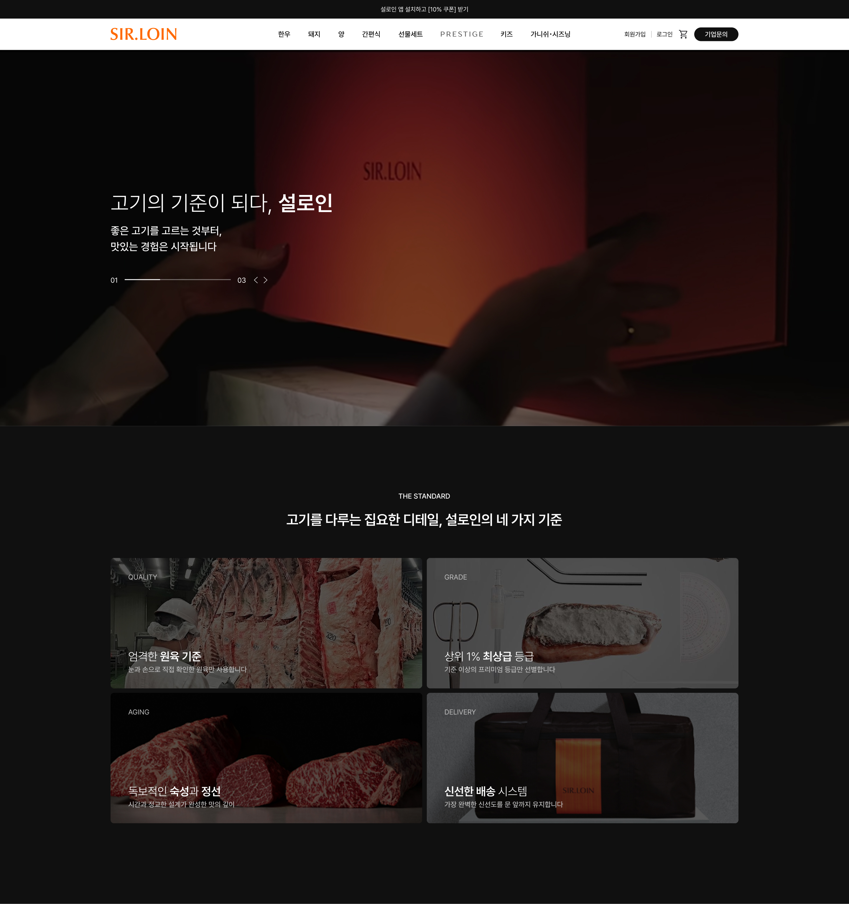


Description
설로인은 프리미엄 한우를 중심으로 한 정육 브랜드로, 현재는 모바일 앱으로만 운영되고 있습니다.
본 프로젝트는 설로인의 모바일 앱을 웹사이트로 재구성하여, 브랜드의 아이덴티티를 유지하면서도 기존 앱을 그대로 옮기지 않고, 데스크탑에 맞는 정보구조와 비주얼로 새롭게 설계하는 데 초점을 맞췄습니다. 피드형 커머스 구조였던 앱과 달리 브랜드 신뢰를 먼저 쌓은 뒤 구매로 이어지는 흐름으로 섹션을 재구성했고, 설로인만의 라이프스타일 확장 포인트(캠핑·그릴링·다이닝·키즈)를 살려 브랜드 포지셔닝을 발전시켰습니다.
Year
2026.08

0%
Scroll
